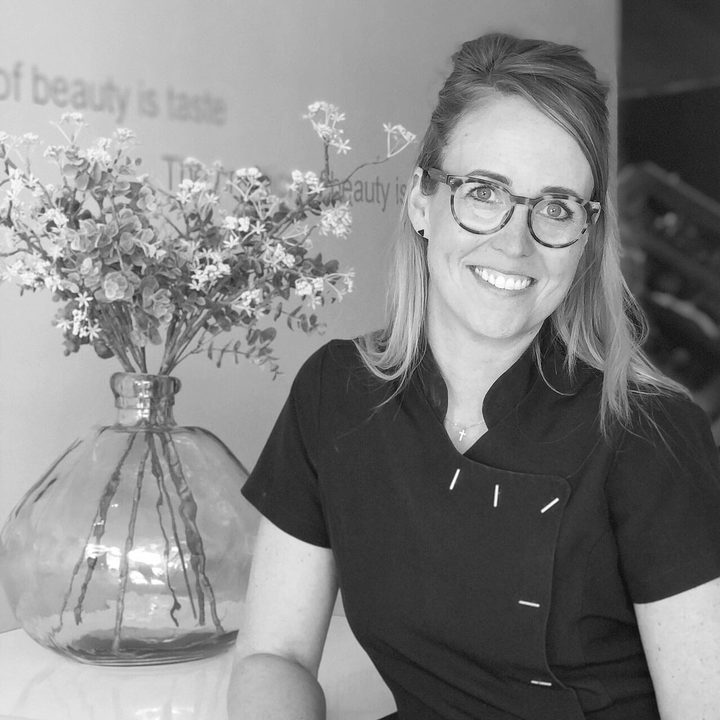
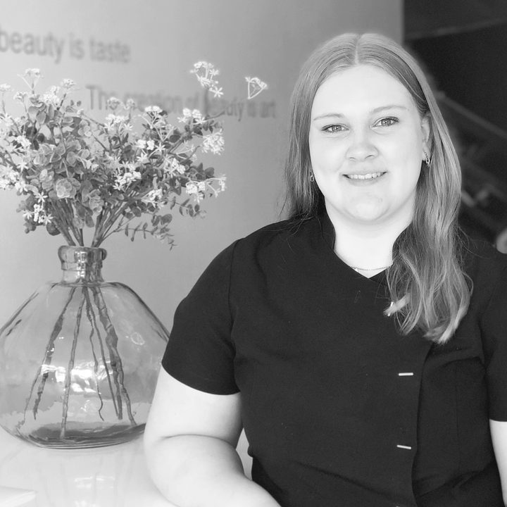
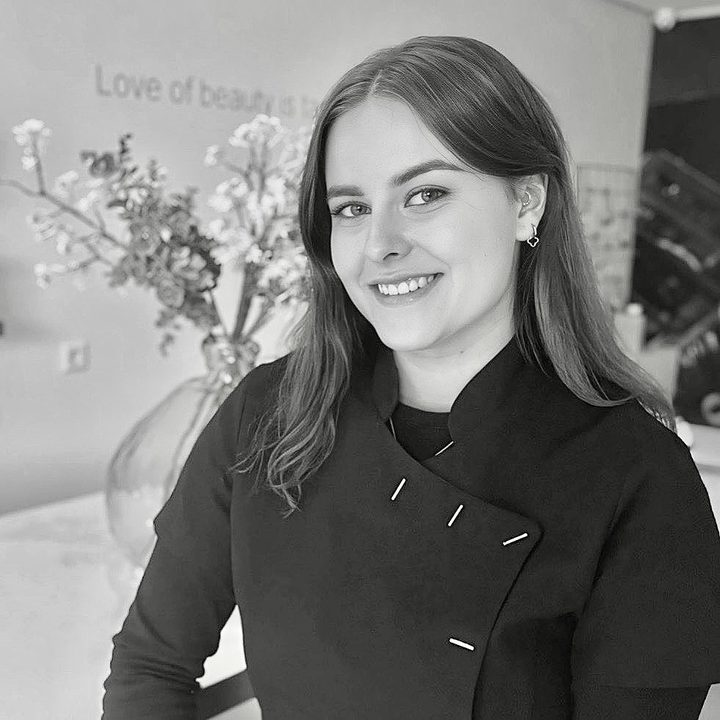
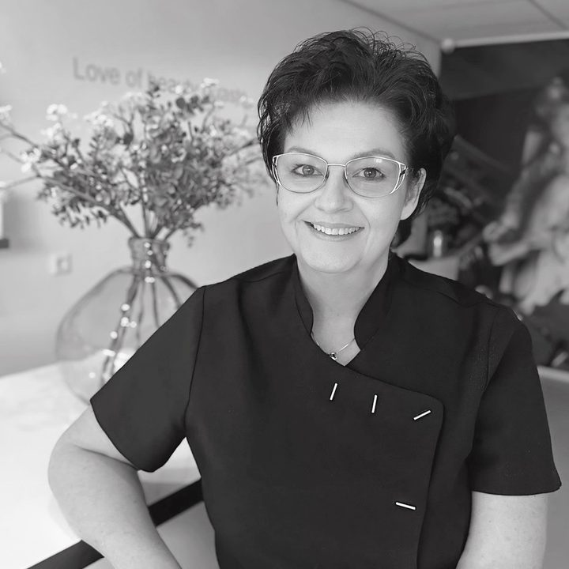
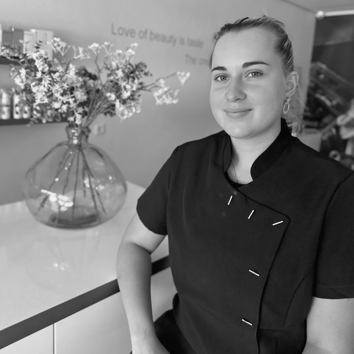

Huidverzorging
Thalion treatments, van een snelle reiniging tot een intens hydraterende behandeling.
v.a. € 41Meer info
Huidverzorging, pedicure, gellak, lash lift en permanente make-up. Sinds 2005 in Roosendaal, en we nemen graag de tijd om naar je te luisteren.
Super lieve medewerksters die goed naar je luisteren wat je wil en goed advies geven.Bianca, via Salonized
We werken uitsluitend met professionele producten en stemmen die af op jouw huidtype. Klik op een behandeling voor de uitleg en prijzen.
Thalion treatments, van een snelle reiniging tot een intens hydraterende behandeling.
Décaar Bio-Peeling en Oxygen, voor de onzuivere of vermoeide huid.
Van een cosmetische pedicure tot nagelproblemen, eelt en likdoorns.
Voor bijvoorbeeld diabetes. Met verwijzing van de podotherapeut grotendeels vergoed.
Rubber Base Gellak op handen of voeten, 2 tot 3 weken mooi.
Een lift en kleur voor je eigen wimpers, 6 tot 8 weken mooi.
Wenkbrauwen en eyeliner, door onze GGD-gecertificeerde specialiste.
Een momentje voor jezelf, voor wie binnenkort mama wordt of het al is.
Vaak is het een abracadabra aan behandelingen, en welke kies je dan? Daarom hebben we voor nieuwe klanten een First Time Treatment samengesteld.
We kijken eerst naar je huid of je voeten en adviseren daarna welke behandeling en producten het beste bij jou passen.
We lopen de behandelingen en merken met je door en beginnen met een reiniging en peeling, zodat je de producten voelt. Daarna volgt ter ontspanning een massage.
We kijken samen naar je voeten en bespreken welke zones aandacht nodig hebben. Zo maken we een plan van aanpak dat bij jouw voeten past.
Heerlijke gezichtsbehandeling en pedicure. Super lieve medewerksters die goed naar je luisteren wat je wil en goed advies geven. Echt een aanrader....heel professioneel
Bianca · SalonizedOm de zes weken kom ik voor een pedicure behandeling. Ik heb geen vaste medewerker. Ik ben erg tevreden over alle medewerkers, mijn voeten worden zeer deskundig behandeld.
Wim · SalonizedGezellig, vakkundig, kennis, kwaliteit, goed advies, prima hulpmiddelen, geen pijn. Kortom heel tevreden over eerste behandeling. Vervolgafspraak natuurlijk gemaakt. Aanrader!
John · SalonizedFantastisch geholpen door de pmu-specialiste! Heel tevreden met het resultaat. Personeel heel vriendelijk en duidelijke uitleg!
Loes · SalonizedYvette is een vakkundige en prettige pedicure. Je voelt je heerlijk op je gemak bij haar en je loopt weer verend weg na de behandeling.
Hennie · SalonizedFijne salon en netjes geholpen! Ook werd er mee gedacht naar de bruiloft toe!
Nikita · SalonizedSinds 2005 zit Studio Nicole aan de St. Josephstraat in Roosendaal. Voor je huid, voeten, handen, wimpers en permanente make-up hoef je nergens anders heen.
Iedere specialiste heeft haar eigen vak, van huidverbetering tot medisch pedicure. Zo ben je altijd bij de juiste persoon.
“Super trots op de salon zoals hij is, alles onder 1 dak op het gebied van uiterlijke verzorging. Voor iedere doelgroep en type klant.”Nicole, eigenaresse sinds 2005





Kies je behandeling en een tijd die jou past in onze online agenda. Liever even overleggen? Bel of mail ons gerust.
Je ziet direct welke tijden er vrij zijn, ook 's avonds op maandag en woensdag. Permanente make-up plan je via telefoon of mail.
Verhinderd? Laat het ons uiterlijk 48 uur van tevoren weten.